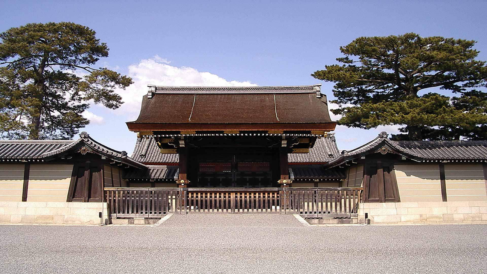
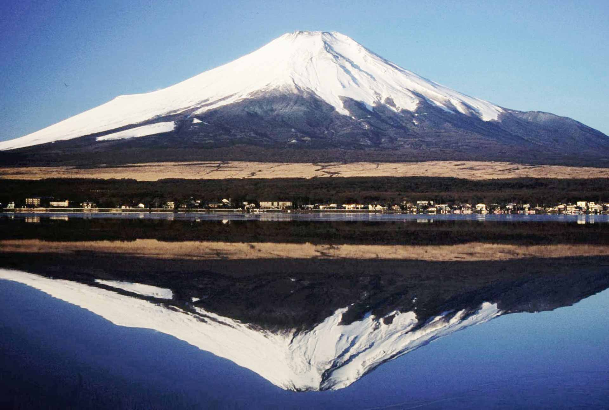
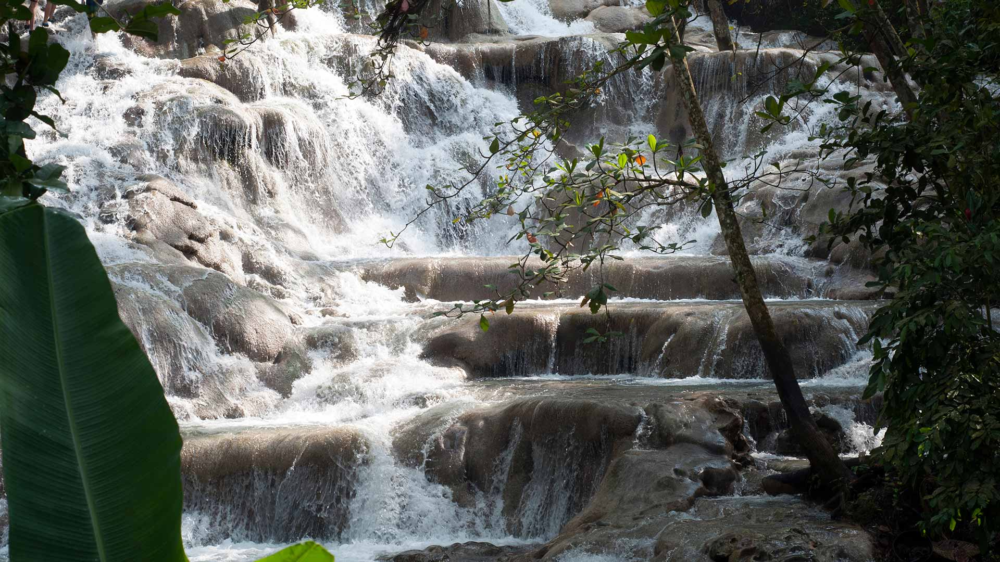
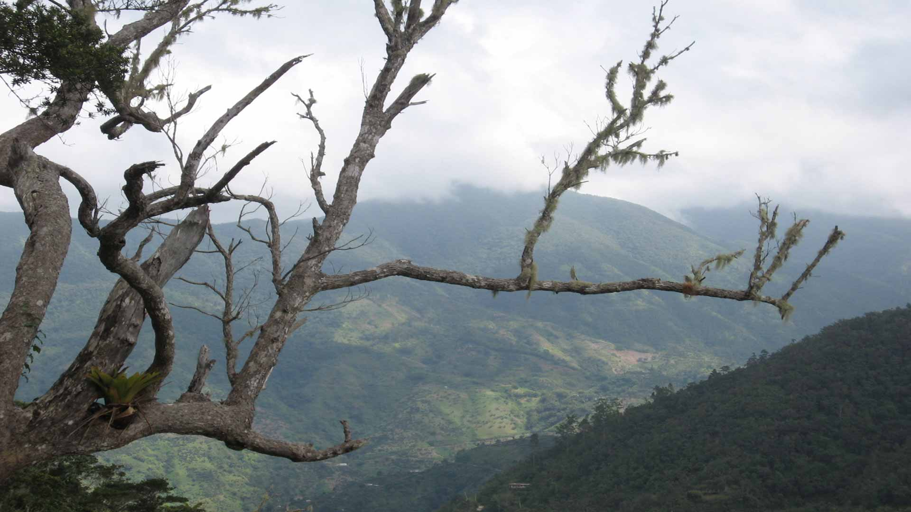

-
Milan Cathedral, Italy
The Milan Cathedral is the fifth largest cathedral in the world and the largest in Italy. Construction began in 1386, and took nearly six centuries to complete. Come see the elaborate architecture of fourteenth century Italy.
Visit Italy -
Trevi Fountain, Italy
In Rome's Trevi district the Trevi Fountain, designed by Nicola Salvi was finished in 1762. The fountain is the largest in the city and one of the most well-known around the world. Take a trip and enjoy the beautiful sculptures dedicated to Rome's survival.
Visit Italy - 
Imperial Palace, Japan
Imperial Palace is the home of the imperial family. The Palace consists of multiple buildings to include the families private grounds, a museum, and archives. The palace has been rebuilt multiple times, and has endured the trials Japan has offered. Come see this source of culture in the heart of Japan.
Visit Japan - 
Mt. Fuji, Japan
Located on Honshu Island, Mt. Fuji is the tallest mountain in Japan. This natural wonder has a glorious 360 view of Lake Ashinko and the Owakudani Valley.
Visit Japan
- 
Dunn's River Falls, Jamaica
Take a trip to Jamaica to experience the Dunn's River Falls. This waterfall located on the Dunn's River is a tourist attraction. You can attempt to climp the falls, or with the help of a guide. The falls are surrounded by beautiful flora and trees.
Visit Jamaica
- 
Blue Mountains, Jamaica
Conquer the Blue Mountains of Jamaica. See the lush and beautiful nature paths which you can take on a bike tour. Take a trip to Jamaica and see the beautiful nature.
Visit Jamaica